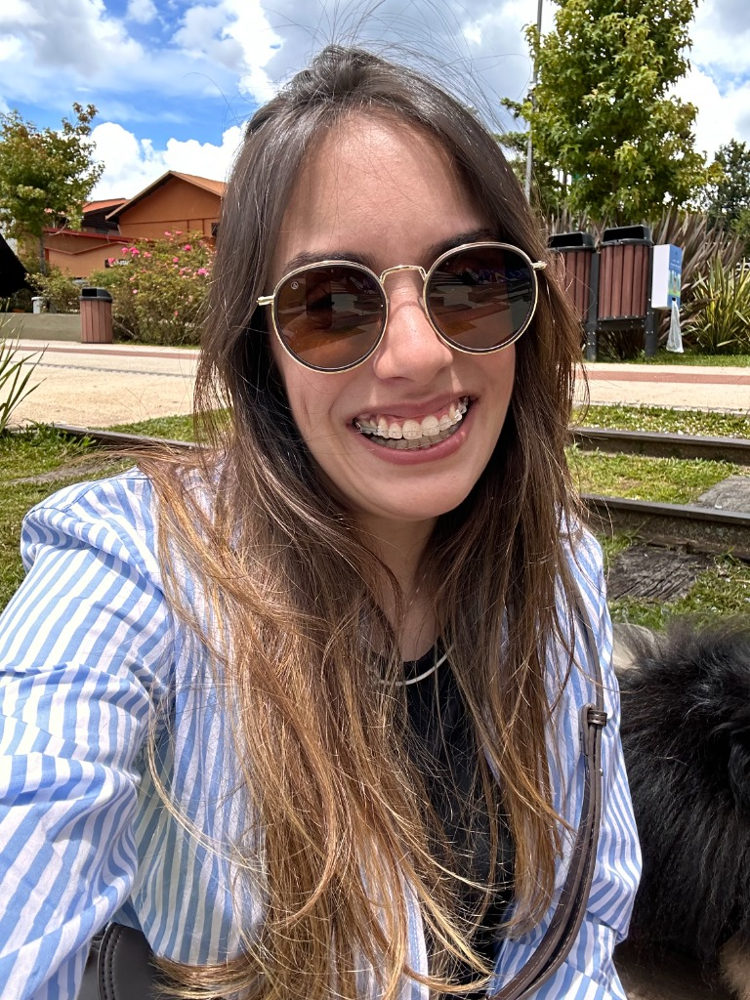

Olá, eu sou a Joana Ritter.
Senior Product Designer
focada em IA & Produtos
Complexos
Especializada em produtos digitais complexos e ecossistemas orientados por IA. Com histórico no setor financeiro e tecnologia (XP Inc, TOTVS, Vindi, Banco Original), conecto pesquisa e dados para escalar decisões de produto, equilibrando negócio e tecnologia.
Sobre Mim
Product Designer focada em produtos digitais complexos e orientados por IA, ajudando times a reduzir incertezas e tomar decisões melhores ao conectar pesquisa com usuários, dados, contexto de negócio e tecnologia.
Hard Skills
Reconhecimentos & Certificações
-
Campeã Mundial NASA SpaceApps Challenge
-
Speaker - EducaXperience 2024 Palestrante em grande evento de educação e tech
-
Finalista IBM Behind The Code Marathon
Experiência Profissional
TOTVS
Product Designer (Programa Júpiter)
Lidero o design end-to-end do Programa Júpiter, focado em ecossistemas enterprise complexos. Atuo na descoberta da solução e entrega em alta fidelidade, equilibrando as necessidades de negócios com tecnologia, em grande escala e impacto para milhares de usuários B2B.
Vindi
Product Designer
Design de experiências centradas no usuário para os sistemas de pagamento e POS da marca, em um ambiente altamente engajado e regulado (Bacen), estruturando decisões orientadas por métricas de adoção e satisfação no mercado.
XP Inc.
Product Designer
Liderei a definição e construção da estratégia da Nova Home e Menu do App de Investimentos da XP, criando soluções intuitivas a partir de regras complexas do mercado e consolidando uma experiência segura e fácil para os investidores (B2C).
Banco Original
UX/UI Designer
Atuação focada na estruturação da experiência bancária com forte inovação para o primeiro banco 100% digital do Brasil.
Formação Acadêmica
FAAP
MBA em Gestão Estratégica do Design
Descomplica
MBA em Design Thinking e Gestão de Pessoas
Faculdade Impacta
Pós-Graduação em Arquitetura da Informação e UX
PUC-SP
Especialização em Arquitetura da Informação e UX
UNICID
Licenciatura em Pedagogia
Vamos criar algo incrível juntos?
Estou sempre aberta a conversar sobre design, tecnologia e novas oportunidades.